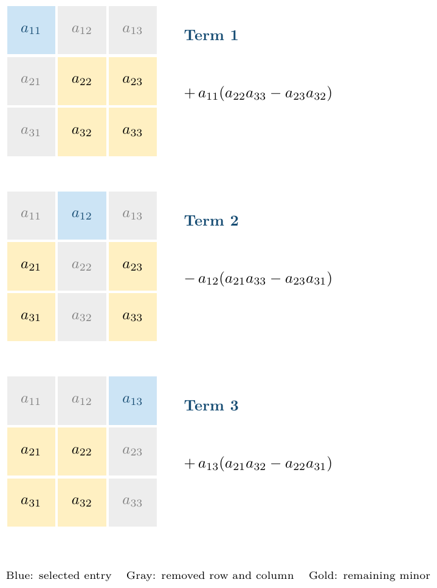

Section 3.1 The Cofactor Expansion
Textbook section 3.1.
In this chapter, we are working with square \(n\times n\) matrices.
Goal of this section: Find a number (called a determinant) that we can calculate from a matrix that tells us whether or not it’s invertible.
We saw a result in the previous chapter that
\begin{equation*}
A^{-1}=\dfrac{1}{ad-bc}\begin{bmatrix} d & -b \\ -c & a \end{bmatrix}
\end{equation*}
When can this go wrong?
Definition 3.1.1.
The determinant of \(A=\begin{bmatrix}a & b \\ c & d \end{bmatrix}\) is
\begin{equation*}
\det(A)=ad-bc.
\end{equation*}
Activity 3.1.1.
Find the determinant of \(A=\begin{bmatrix} 3 & 1 \\ 4 & 2 \end{bmatrix}\) and \(B=\begin{bmatrix}3 & 2 \\ 6 & 4 \end{bmatrix}\)
We can use the \(2\times 2\) determinant to build the \(3\times 3\) determinant. It will not be clear right now why this is the correct analogous function, but we’ll explore that more later.
Definition 3.1.2.
Let \(A\) be a \(3\times 3\) matrix. The \((i,j)-\)minor of \(A\text{,}\) denoted \(\mathop{\mathrm{minor}}(A)_{ij}\text{,}\) is the determinant of the \(2\times 2\) matrix which results from deleting the \(i^{\text{th}}\) row and \(j^{\text{th}}\) column of \(A\text{.}\)
In general, if \(A\) is \(n\times n\text{,}\) then the \(i,j^{\text{th}}\) minor of \(A\) is the determinant of the \((n-1)\times(n-1)\) matrix which results from deleting the \(i^{\text{th}}\) row and \(j^{\text{th}}\) column of \(A\text{.}\)
Activity 3.1.2.
Find \(\mathop{\mathrm{minor}}(A)_{11}\) and \(\mathop{\mathrm{minor}}(A)_{23}\) for
\begin{equation*}
A=\begin{bmatrix} 1 & 2 & 3\\ 4 & 3 & 2 \\ 3 & 2 & 1 \end{bmatrix}
\end{equation*}
Definition 3.1.3.
Let \(A\) be a \(n\times n\) matrix. The \((i,j)\)-cofactor of \(A\text{,}\) denoted \(\mathop{\mathrm{cof}}(A)_{ij}\text{,}\) is the defined to be
\begin{equation*}
\mathop{\mathrm{cof}}(A)_{ij}=(-1)^{i+j}\mathop{\mathrm{minor}}(A)_{ij}
\end{equation*}
Activity 3.1.3.
Find \(\mathop{\mathrm{cof}}(A)_{11}\) and \(\mathop{\mathrm{cof}}(A)_{23}\) for
\begin{equation*}
A=\begin{bmatrix} 1 & 2 & 3\\ 4 & 3 & 2 \\ 3 & 2 & 1 \end{bmatrix}
\end{equation*}
Definition 3.1.4.
Let \(A\) be a \(3\times 3\) matrix. Then the determinant of \(A\text{,}\) \(\det(A)\text{,}\) is calculated by picking a row (or column), taking the product of each entry of that row (column) with its cofactor, then adding these products together. In other words, if we pick row \(i\text{,}\) this process is called expanding along the \(i\)-th row and is given as
\begin{equation*}
\det(A)=a_{i1}\mathop{\mathrm{cof}}(A)_{i1}+a_{i2}\mathop{\mathrm{cof}}(A)_{i2}+a_{i3}\mathop{\mathrm{cof}}(A)_{i3}
\end{equation*}
This process is called calculating the determinant by cofactor expansion.

Example 3.1.6.
(a)
Find the determinant of
\begin{equation*}
A=\begin{bmatrix} 1 & 2 & 3\\ 4 & 3 & 2 \\ 3 & 2 & 1 \end{bmatrix}
\end{equation*}
by expanding along row 1. Also try expanding along column 2.
Solution.
Using row 1: \(\det(A) = 1\mathop{\mathrm{cof}}(A)_{11} + 2\mathop{\mathrm{cof}}(A)_{12} + 3\mathop{\mathrm{cof}}(A)_{13}\)
\(\mathop{\mathrm{cof}}(A)_{11} = (-1)^{1+1}\det\begin{bmatrix} 3 & 2 \\ 2 & 1 \end{bmatrix} = (1)(3\cdot 1 - 2\cdot 2) = -1\)
\(\mathop{\mathrm{cof}}(A)_{12} = (-1)^{1+2}\det\begin{bmatrix} 4 & 2 \\ 3 & 1 \end{bmatrix} = (-1)(4\cdot 1 - 2\cdot 3) = 2\)
\(\mathop{\mathrm{cof}}(A)_{13} = (-1)^{1+3}\det\begin{bmatrix} 4 & 3 \\ 3 & 2 \end{bmatrix} = (1)(8 - 9) = -1\)
Therefore: \(\det(A) = 1(-1) + 2(2) + 3(-1) = -1 + 4 - 3 = 0\)
Using column 2: \(\det(A) = 2\mathop{\mathrm{cof}}(A)_{12} + 3\mathop{\mathrm{cof}}(A)_{22} + 2\mathop{\mathrm{cof}}(A)_{32}\)
\(\mathop{\mathrm{cof}}(A)_{12} = (-1)^{1+2}\det\begin{bmatrix} 4 & 2 \\ 3 & 1 \end{bmatrix} = (-1)(4\cdot 1 - 2\cdot 3) = 2\)
\(\mathop{\mathrm{cof}}(A)_{22} = (-1)^{2+2}\det\begin{bmatrix} 1 & 3 \\ 3 & 1 \end{bmatrix} = (1)(1\cdot 1 - 3\cdot 3) = -8\)
\(\mathop{\mathrm{cof}}(A)_{32} = (-1)^{3+2}\det\begin{bmatrix} 1 & 3 \\ 4 & 2 \end{bmatrix} = (-1)(2 - 12) = 10\)
\(\det(A) = 2(2) + 3(-8) + 2(10) = 4 - 24 + 20 = 0\)
(b)
To track the sign \((-1)^{i+j}\text{,}\) we can view the matrix as a checkerboard pattern:
Note: Since the row/column doesn’t matter, you should choose the “easiest” row/column:
Activity 3.1.4.
(a)
\(\det\left(\begin{bmatrix} 3 &-5 & 1\\ 0 & 1 & 0 \\ -2 & -4 & 7\end{bmatrix}\right)\)
Solution.
Using row 2 (has two zeros): \(\det(A) = 0\cdot\mathop{\mathrm{cof}}(A)_{21} + 1\cdot\mathop{\mathrm{cof}}(A)_{22} + 0\cdot\mathop{\mathrm{cof}}(A)_{23}\)
\(\mathop{\mathrm{cof}}(A)_{22} = (-1)^{2+2}\det\begin{bmatrix} 3 & 1\\ -2 & 7\end{bmatrix}\) \(= (1)(3\cdot 7 - 1\cdot(-2))\) \(= 21 + 2 = 23\text{.}\) Therefore \(\det(A) = 23\)
(b)
\(\det\left(\begin{bmatrix} 0 & \pi & 200\\ 0 & 0.03 & 4 \\ 0 & 19 & -3584\end{bmatrix}\right)\)
We can compute the determinant of a general \(n\times n\) matrix by recursively repeating this process:
Example 3.1.7.
\(A=\begin{bmatrix} 1 & 2 & 3 & 4 \\ 5 & 4 & 2 & 3\\ 1 & 3 & 4 & 5 \\ 3 & 4 & 3 & 2\end{bmatrix}\text{,}\) if we expand along third column, we get
Solution.
\begin{equation*}
\begin{aligned} &\det(A)=3(-1)^{1+3}\det\left(\begin{bmatrix} 5 & 4 & 3 \\ 1 & 3 & 5\\ 3 & 4 & 2\end{bmatrix}\right)\\ &+2(-1)^{2+3}\det\left(\begin{bmatrix} 1 & 2 & 4\\ 1 & 3 & 5\\ 3 & 4 & 2\end{bmatrix}\right)\\ &+4(-1)^{3+3}\det\left(\begin{bmatrix} 1 & 2 & 4\\ 5 &4 & 3\\ 3 & 4 & 2\end{bmatrix}\right)\\ &+3(-1)^{4+3}\det\left(\begin{bmatrix} 1 & 2 & 4\\ 5 & 4 & 3\\ 1 & 3 & 5\end{bmatrix}\right)=-12. \end{aligned}
\end{equation*}
Definition 3.1.8.
Let \(A\) be a \(n\times n\) matrix (\(n\geq 3)\text{.}\) Then the determinant of \(A\text{,}\) \(\det(A)\text{,}\) is
\begin{equation*}
\det(A)=\sum_{j=1}^n a_{ij}\mathop{\mathrm{cof}}(A)_{ij}=\sum_{i=1}^n a_{ij}\mathop{\mathrm{cof}}(A)_{ij}
\end{equation*}
Example 3.1.9.
Compute \(\det(A)\) for \(A = \begin{bmatrix} 3 & 2 & 3 & 4 \\ 0 & 4 & 2 & 3\\ 0 & 0 & 2 & 5 \\ 0 & 0 & 0 & -1\end{bmatrix}\)
Solution.
Using column 1 (3 zeros): \(\det(A) = 3\cdot\mathop{\mathrm{cof}}(A)_{11} + 0\cdot\mathop{\mathrm{cof}}(A)_{21} + 0\cdot\mathop{\mathrm{cof}}(A)_{31} + 0\cdot\mathop{\mathrm{cof}}(A)_{41}\) \(= 3\cdot\mathop{\mathrm{cof}}(A)_{11}\) \(= 3\cdot(-1)^{1+1}\det\begin{bmatrix} 4 & 2 & 3\\ 0 & 2 & 5\\ 0 & 0 & -1\end{bmatrix}\)
Looking at this \(3\times 3\) determinant, use column 1 again: \(= 3\cdot(1)\cdot[4\cdot\det\begin{bmatrix} 2 & 5\\ 0 & -1\end{bmatrix}]\) \(= 3\cdot 4\cdot[2\cdot(-1) - 5\cdot 0]\) \(= 3\cdot 4\cdot(-2)\) \(= -24\)
Alternative justification: Since \(A\) is upper triangular, \(\det(A)\) is the product of diagonal entries: \(\det(A) = 3\cdot 4\cdot 2\cdot(-1) = -24\)
Definition 3.1.10.
The main diagonal of an \({n \times n}\) matrix \(A\) is the set of entries \((a_{11}, a_{22}, \ldots , a_{nn})\text{.}\)
Definition 3.1.11.
An \({n \times n}\) matrix \(A = [{a_{ij}}]\) is called upper triangular if \(a_{ij} = 0\) for \(i>j\text{,}\) and \(A\) is called lower triangular if \(a_{ij} = 0\) for \(i < j\text{.}\) A diagonal matrix is both upper and lower triangular.
Theorem 3.1.12.
If \(A=[a_{ij}]\) is a upper/lower triangular matrix, then \(\det(A)=a_{11}a_{22}\cdots a_{nn}\text{,}\) that is, the determinant of a triangular matrix is the product of the elements on the main diagonal.
Properties of Determinants.
Theorem 3.1.13.
Theorem 3.1.14.
If \(B\) results from \(A\) by interchanging two different rows (or two different columns), then \(\det(B)=-\det(A)\text{.}\)
Why is it true?
Check for \(2 \times 2\text{:}\) \(A=\begin{bmatrix}a & b \\ c & d \end{bmatrix}\) and \(\det(A)=ad-bc.\) OTOH, \(B=\begin{bmatrix}c & d \\ a & b \end{bmatrix}\) and \(\det(B)= cb - ad = -(ad-bc).\)
Theorem 3.1.15.
Why is it true?
Let \(B\) be the matrix obtained by interchanging these two equal rows. Then \(B=A\) (since the rows were equal) but also \(\det(B)=-\det(A)\) (by the previous theorem about row interchanges). Therefore: \(\det(A) = \det(B) = -\det(A)\text{.}\) This implies \(2\det(A) = 0\text{,}\) so \(\det(A) = 0\text{.}\)
Theorem 3.1.16.
If \(B\) is obtained from \(A\) by multiplying a row (column) of \(A\) by a real number \(k\text{,}\) then \(\det(B)=k\det(A)\text{.}\)
Why is it true?
Suppose row \(i\) is multiplied by \(k\text{.}\) Expand along that row
\begin{equation*}
\begin{aligned} &\det(k A)=k a_{i1}\mathop{\mathrm{cof}}(kA)_{i1}+ k a_{i2}\mathop{\mathrm{cof}}(kA)_{i2}+k a_{i3}\mathop{\mathrm{cof}}(kA)_{i3}\\ & =k a_{i1}\mathop{\mathrm{cof}}(A)_{i1}+ k a_{i2}\mathop{\mathrm{cof}}(A)_{i2}+k a_{i3}\mathop{\mathrm{cof}}(A)_{i3} = k \det(A) \end{aligned}
\end{equation*}
since \(\mathop{\mathrm{cof}}(kA)_{ij}\) does not depend on the \(i\)-th row.
Fact 3.1.17.
Theorem 3.1.18.
If \(B\) is obtained by adding \(k\) times the \(i\)th row of \(A\) to the \(j\)th row (\(i\neq j\)), written as \(R_j \to R_j + k R_i\text{,}\) then \(\det(A)=\det(B)\text{.}\)
Check for \(2\times 2\text{:}\) \(\det\left(\begin{bmatrix}a & b \\ c & d \end{bmatrix}\right) =\)\(ad-bc\)
\(\det\left(\begin{bmatrix}a & b \\ ka+c & kb+d \end{bmatrix}\right) =\)
Row Operations and the Determinant: Here is a summary of how the elementary row operations affect the determinant:
-
Type III (replacement): \(R_j \to R_j + kR_i\) leaves determinant unchanged
Example 3.1.19.
If \(B\) is obtained from \(A\) by the following operations: \(R_1 \leftrightarrow R_2\text{,}\) \(R_4 \to 4R_4\text{,}\) and \(R_3 \to R_3 + 3R_2\text{,}\) and \(\det(A)=8\text{,}\) what is the determinant of \(B\text{?}\)
Example 3.1.20.
Compute the determinant of the matrix \(B = {\left[ \begin{array}{rrr} 1 & 2 & 1 \\ -1 & 3 & 3 \\ 0 & 15 & 12 \end{array} \right]}\)
Solution.
Use row operations to make the matrix upper triangular:
\(B = \begin{bmatrix} 1 & 2 & 1\\ -1 & 3 & 3\\ 0 & 15 & 12\end{bmatrix}\)
Now we have an upper triangular matrix. The determinant is \(0\) because we have a row of zeros.